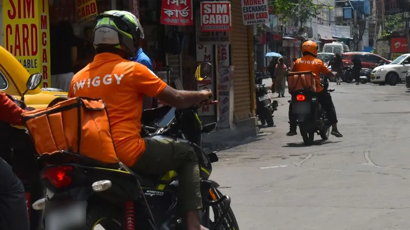

Google Maps Is Behind Every Food Order I Place. So Why Doesn’t Google Deliver?

Views are my own. Everything here is based on publicly available information and says nothing about Google’s plans or internal thinking.
I’ve lived in Bangalore for a little over a year now, and two apps have quietly become part of my daily routine: one to order food, one to book a cab. Some weeks I think I talk to delivery partners more than I talk to my neighbours.
A few months ago I was watching my biryani crawl across the screen, the little bike icon turning at every junction, and something clicked. That map looked awfully familiar. And it isn’t just a feeling. Swiggy has publicly described using Google’s Maps APIs to decide which restaurants to show you and to route riders to your door.
I’m an engineer at Google, and business strategy is not my day job. But the question stuck with me. If these apps lean this heavily on Maps, and Google already knows every restaurant, every road, and roughly how long it takes to get anywhere, why doesn’t Google just build food delivery itself?
The obvious case for yes
On paper it looks almost unfair. Google has restaurant listings with photos, menus, and reviews. It has live traffic. It has Google Pay, which a huge chunk of India already uses. It has Search, which is where a lot of people start when they’re hungry and don’t know what they want. Stitch those together and you have discovery, routing, and payments in one place. The delivery apps are essentially renting pieces of this.
So my first instinct was simple. Google owns the rails, why not own the train too?
What the rails actually give you
The more I thought about it, the more I realised I was overrating the map.
Maps gives you geocoding (turning an address into a point), routing, and ETAs. These are hard problems, and Google does them well. But for a delivery company they are inputs, paid for per API call, a bit like electricity. Important, yes, but nobody wins food delivery because they have better electricity.
And the rails are less sticky than they look. In July 2024, Ola moved completely off Google Maps to its own Ola Maps, and Bhavish Aggarwal said it would save the company about ₹100 crore a year. Days later, Google announced India pricing up to 70% lower on most Maps APIs. Google said this was something partners had been asking for, not a response to Ola. Either way, the cab app on my phone had already shown that a big enough customer can build its own map.
What actually decides who wins is everything that happens off the map.
The stuff Maps can’t touch
Start with restaurants. Someone has to sign up thousands of them, onboard their menus, update prices every week, handle the owner who calls angry because an order got cancelled, and negotiate commissions. That’s a sales and operations army, city by city, lane by lane.
Then there are riders. Delivery is a density game. You need enough riders in every pocket of the city at 1pm and 9pm so food arrives hot, but not so many that they sit idle at 4pm. That means recruiting, incentives, insurance, payouts, and a lot of messy human management. None of it is a software problem you solve once.
And the customer isn’t easy to move either. Once someone has a food app on their home screen with saved addresses, a membership, and years of order history, switching is real friction. Being the map underneath doesn’t make you the app they open.
So Maps gives Google a head start on maybe one of the hard problems. The rest are exactly the kind of work Google has historically not loved doing.
Google has already tried
This surprised me. Google has actually been here before.
In April 2017, Google quietly launched an app called Areo in Bangalore and Mumbai for food delivery and home services. You ordered through the app, Google passed the request to the partner, and the partner took over from there. In other words, Google tried to be the front door without owning any of the hard parts. It never went anywhere, and I think I understand why. If you only own the front door, people have no reason to walk in through yours. And when the food shows up late or cold, the front door takes the blame without any of the levers to fix it.
The other route was investing. Dunzo, the Bangalore errands app, was the first Indian startup Google invested in directly, back in 2017, taking roughly a fifth of the company. Dunzo became a household verb here (“just Dunzo it”), then got pulled into the quick commerce race, lost money on order after order, and shut down in January 2025.
So Google tried building a thin version and backing a thick one. Neither worked.
Different businesses, different margins
The way I now think about it: Google is very good at businesses where one more user costs almost nothing. Search, Maps, Android. Build it once, serve a billion people.
Food delivery is the opposite. Every extra order needs a real person on a real bike in real traffic. Margins are thin, competition is brutal, and the winners in India spent the better part of a decade burning cash before getting close to profitable. For Google, entering means trading a high margin infrastructure position for a low margin operations war against players with a ten year head start.
There’s also a quieter reason. Today the delivery apps are Maps customers. The moment Google competes with them, they have every reason to do what Ola did and build their own. Google would risk a steady relationship with the whole industry to fight for one slice of it.
So should Google do it?
My take: no, at least not the way the question is usually framed.
Being the layer everyone depends on is not the same as being able to replace them. Google Maps is closer to the road network than to the restaurant. Roads are incredibly valuable, but it would be a strange decision for the road to start cooking biryani.
The version that makes sense to me is the lighter one. Help people discover a place, show reliable ETAs, and hand them off to whichever delivery app they already use.
Then I found out Google launched exactly that in India back in 2016. Search for a nearby restaurant on your phone, tap “Place an order”, pick Zomato or Swiggy, and finish on their site. What I find most interesting is that Areo came a year after that. So Google already had the light version and still took a shot at going deeper. The pull to own more of the transaction is real, even for Google, and it still didn’t work.
I started writing this thinking the answer was obviously yes. I don’t anymore.
If you’ve worked in delivery or logistics and think I’ve got this wrong, tell me.